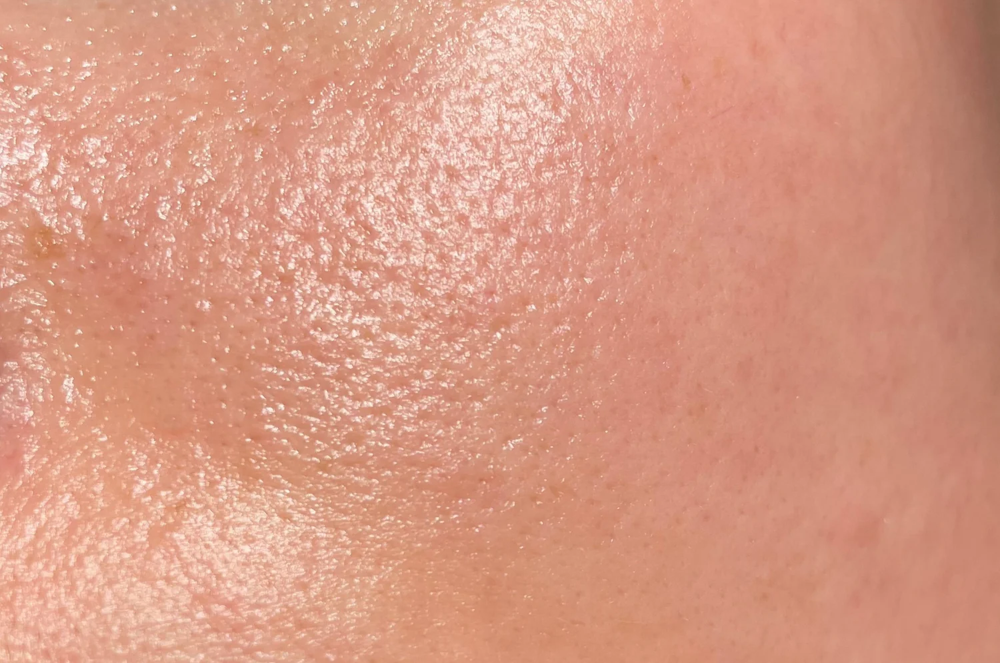
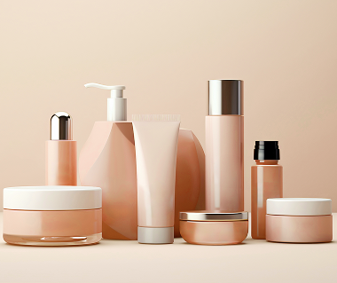
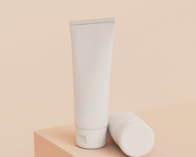
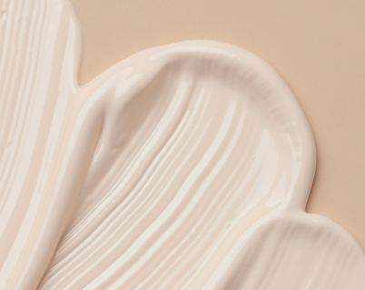

Pelle grassa
La pelle grassa si verifica quando la pelle produce un eccesso di sebo che può causare lucentezza, pori visibilmente dilatati e macchie post-acne.
Bilancia la tua pelle con i migliori prodotti per la cura della pelle grassa e rivela una pelle più sana, pulita e senza effetto lucido.
Cosa scegliere
Detergente
Detergi la tua pelle con un Detergente Viso per Pelle Grassa.
- Rimuove le impurità e le impurità
- Riduce visibilmente il sebo in eccesso
- Formulato con Estratto di Pianta del Deserto ed Estratto di Limone
- Lascia la pelle pulita, fresca e senza effetto lucido
Tonico
Leviga la pelle con un Tonico per Pelle Grassa.
- Rinfresca e riequilibra la pelle senza seccarla eccessivamente
- Formulato con Estratto di Pianta del Deserto e Alantolina
- pH bilanciato e senza profumo
- Lascia la pelle fresca e sana
Idratante
Idrata & rinfresca con un Idratante per Pelle Grassa.
- Idrata la pelle contrastando l'effetto lucido
- Texture ultra leggera e non grassa
- Formulato con Alantolina ed Estratto di Pianta del Deserto
- Specifica per la pelle grassa



Consigli aggiuntivi
Idrata il contorno occhi
La crema per il contorno occhi antirughe, si accoglie in una leggera esplosione di idratazione per levigare la delicata zona del contorno occhi.
Protezione solare al mattino
Per i tipi di pelle grassa, una formula leggera come la crema solare non comedogena con SPF 50+, aiuta a proteggere la tua pelle evindando l'effetto lucido.
Purifica con una maschera viso
Quando la tua pelle è grassa, avvia una disintossicazione con la maschera purificante. In soli 10 minuti, aiuta a purificare la pelle, minimizzare i pori dilatati e ridurre visibilmente il sebo in eccesso.